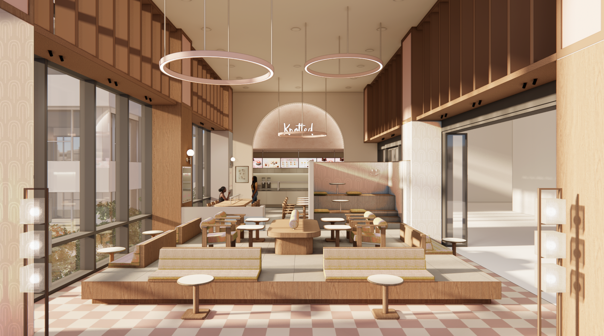
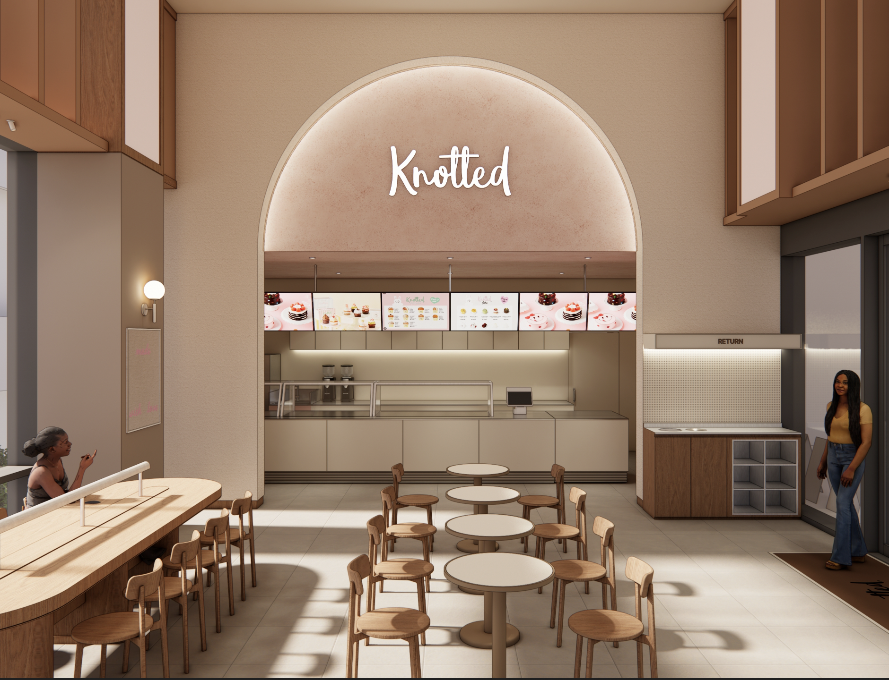
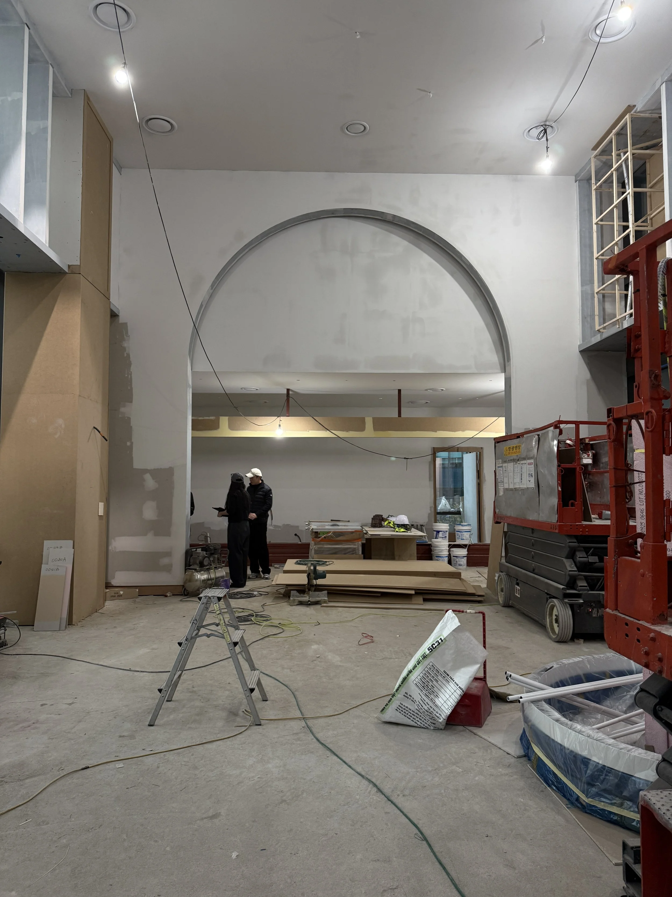
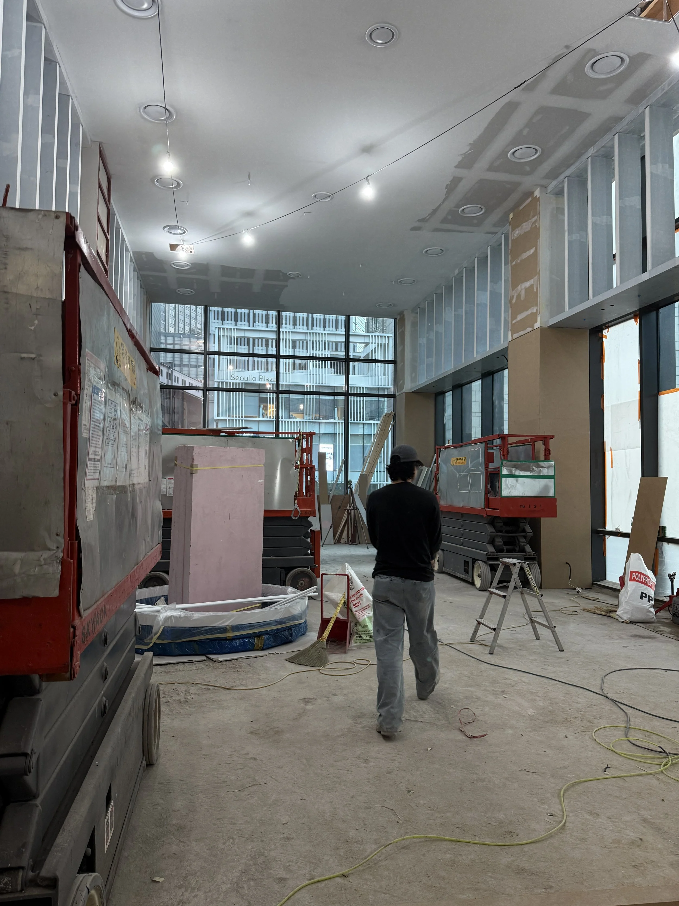
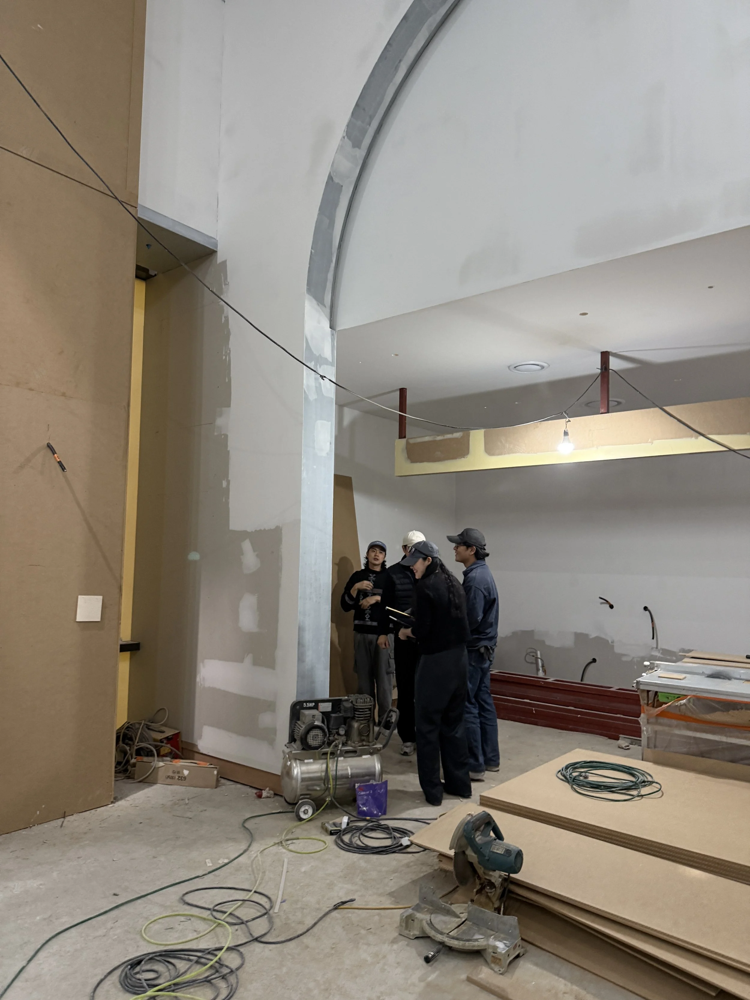
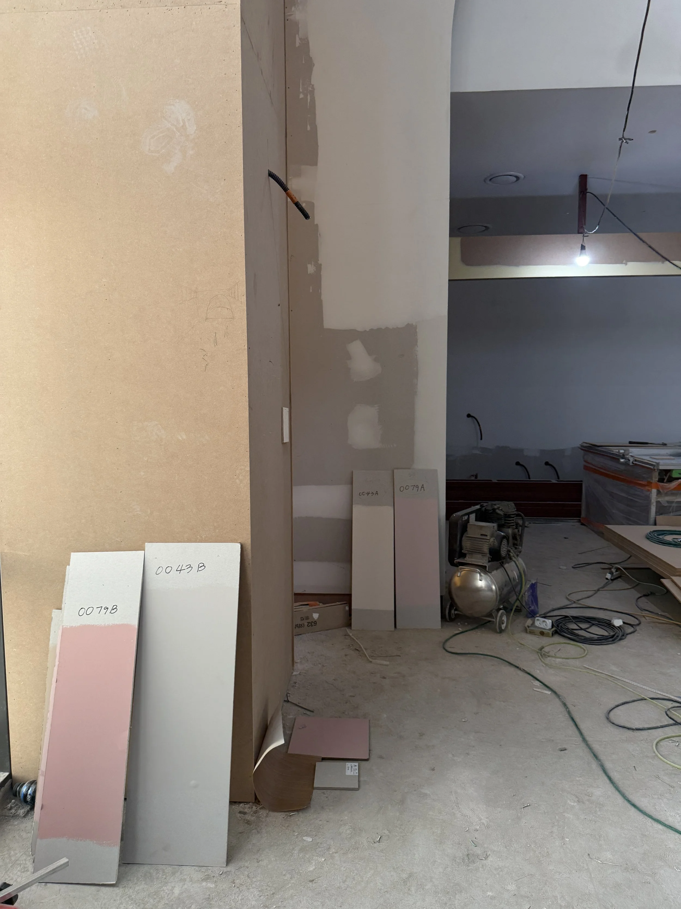
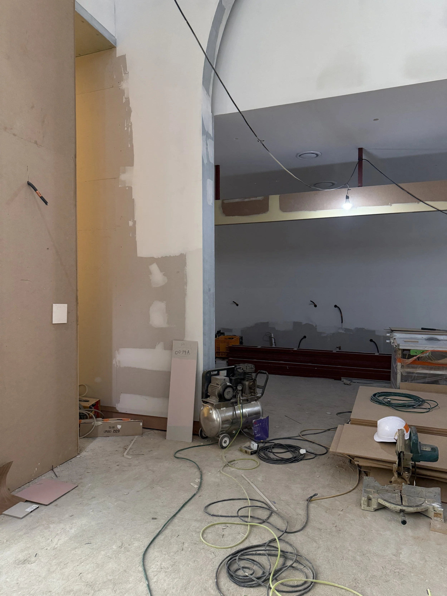
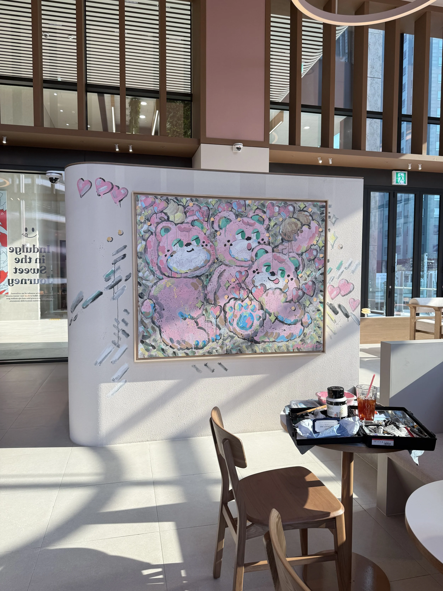
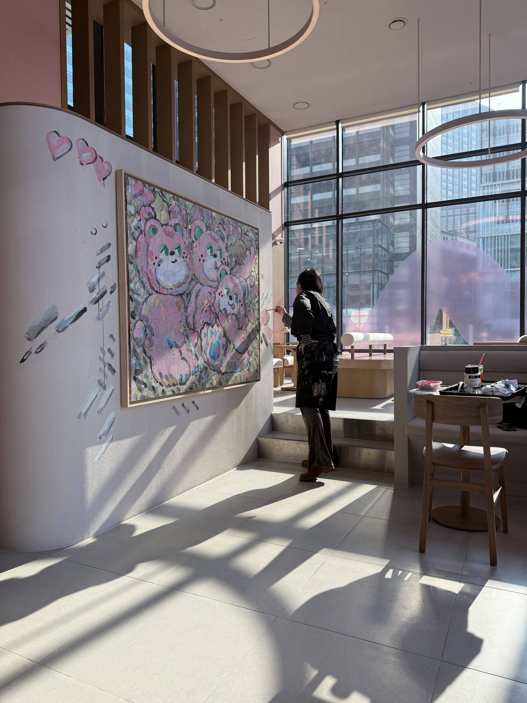

Knotted Seoullo
A quieter Knotted, for a site that gets both commuters and travellers.통근객과 여행객이 섞이는 자리를 위한, 좀 더 조용한 노티드.

- Client
- GFFG
- Location
- Seoul Station
- Year
- 2024
- Role
- Creative Director
- Scope
- Creative direction, interior concept, lighting and furniture, on-site construction follow-through
The brief. A Knotted at Seoul Station, a site that gets both commuters and travellers.
The idea. A quieter Knotted. Soft neutral tones, warm lighting and wood furnishings: calm enough to hold someone for an hour, photogenic enough for someone passing through once.
What I did. Creative direction, the interior concept, lighting and furniture, followed on site from bare walls to the finished store.
브리프. 통근객과 여행객이 함께 지나는 서울역의 노티드.
아이디어. 좀 더 조용한 노티드. 부드러운 뉴트럴 톤, 따뜻한 조명, 목재 가구. 한 시간을 머물 만큼 편안하고, 한 번 지나가는 사람에게도 사진이 남는 공간.
역할. 크리에이티브 디렉션, 인테리어 콘셉트, 조명과 가구. 빈 벽에서 완공까지 현장을 함께했습니다.
Plan계획
A softer palette더 부드러운 팔레트
Rendering: the lit arch with the Knotted sign, wood slats and rounded seating.렌더링. 빛나는 아치와 노티드 사인, 목재 루버, 둥근 좌석.

Construction시공
On site현장
The arch, walls and finishes taking shape, with material samples checked in place.아치와 벽, 마감이 자리를 잡아가는 과정. 자재 샘플도 현장에서 확인했습니다.





Details디테일
The art wall아트 월
A rounded wall with framed artwork and hearts, in the afternoon light.오후 햇살 속, 액자 작품과 하트로 꾸민 둥근 벽.


As built완공
Seoullo, finished완공된 서울로점
Warm light under the arch, wood and soft upholstery.아치 아래 따뜻한 빛, 목재와 부드러운 패브릭.